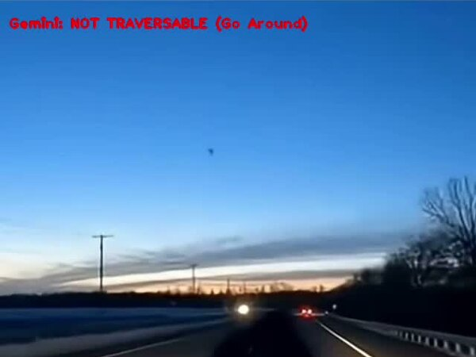
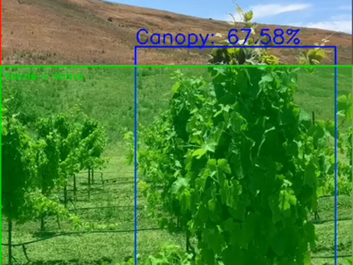
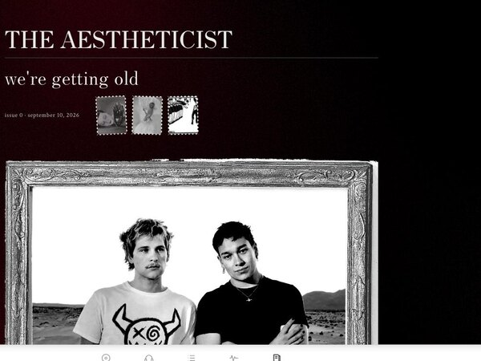
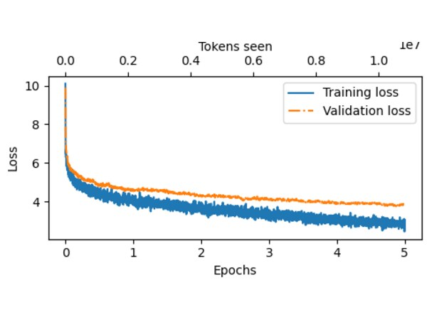

Selected Work
AI/ML Research
Multimodal Perception for Out-of-Distribution Autonomous Navigation
A perception layer that lets an autonomous navigation stack handle objects and scenes it was never trained on — flagging unknowns, then gating forward motion on a vision-language model's traversability verdict. Published in the CS+AI Journal of Computer Science.

Computer Vision Research
Depth-Guided Computer Vision for Precision Agricultural Fertilization
Real-time canopy detection deciding where fertilizer goes, running on a Jetson from a single RGB camera. Monocular depth estimation replaces the LiDAR the budget could never absorb.

Full-Stack Product
Hybrid Recommendation Architecture for Cold-Start Music Discovery
A social album-logging platform on web and mobile, with three recommendation systems built to work with no interaction history and no access to Spotify's deprecated audio-features API.

Deep Learning
A 150M-Parameter Transformer Language Model Built From Scratch
Causal multi-head attention and positional embeddings implemented from the paper up, with no framework doing the interesting parts — then trained, evaluated, and documented across twenty-one posts as it happened.

Contact